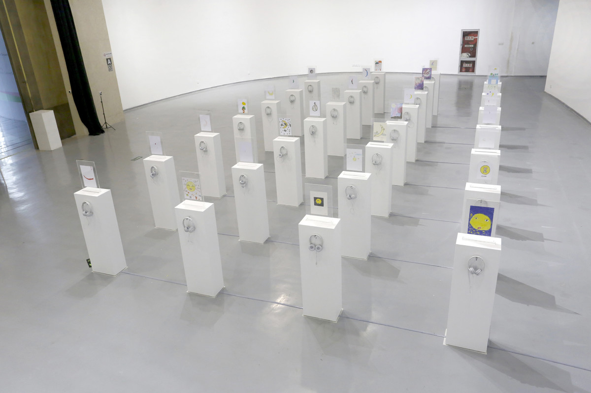

月光

纸本、耳机 ，尺寸可变，2020
邀请30个留守儿童家庭，请小孩子画出头顶的月亮，再邀请远在另一个城市的父母，用声音描述他们头上的月亮，将绘画与声音同步展出。
石玩玩（1981年生，江苏南通）曾称自己的作品是“不以生产图像为目的的行动艺术和公共艺术”，他经常通过对不同社群的干预以介入话语权、社会经济关系和文化记忆等议题。在本次展览中，石玩玩首次呈现了他的新作品《月光》（2020）。为了这件作品，石玩玩寻找到三十个所谓的“留守儿童”家庭，邀请他们提供两件东西协助完成作品：艺术家请留守儿童画一幅月亮的图画，再请留守儿童家长录制一段或者描述观看自己孩子所画的月亮，或是对此项目进行回应的音频。艺术家将图画和音频以排列有序、自成一体的30件艺术作品呈现给观众。自身即是留守家庭长大石玩玩曾说，这件作品引发了他的极度共鸣。艺术家通过将个体自理性受经济条件限制，连其下一代也因此受到影响的普通人的创作突显在观众面前，激发观众对限于自愿和不得不为之两难困境之下的人的主体性进行反思。——赖胜柏（UCCA研究部主任 策展人）